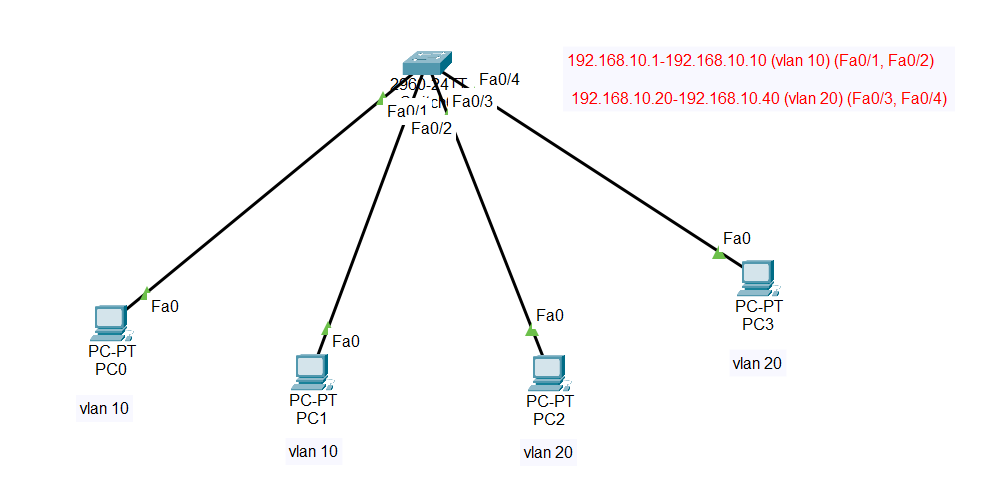
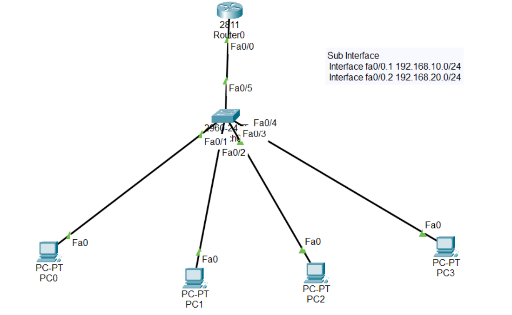
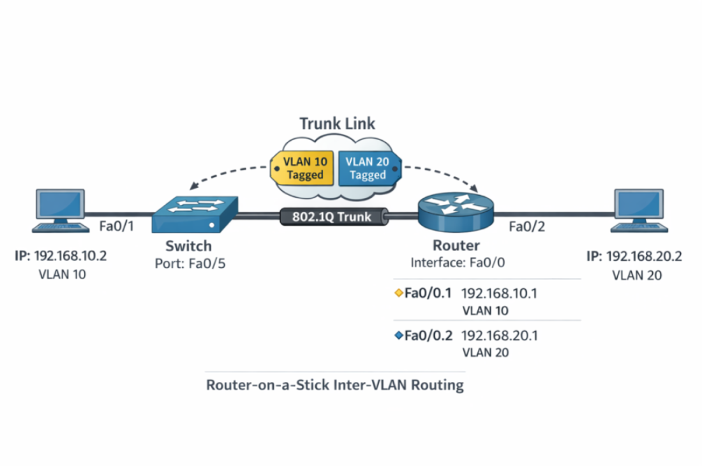

Switch:
Config:
Switch(config)#vlan 10
Switch(config-vlan)#name vlan10
Switch(config-vlan)#exit
Switch(config)#vlan 20
Switch(config-vlan)#name vlan20
Switch(config-vlan)#exit
Switch(config)#int f 0/1
Switch(config-if)#switchport access vlan 10
Switch(config-if)#exit
Switch(config)#int f 0/2
Switch(config-if)#switchport access vlan 10
Switch(config-if)#exit
Switch(config)#int f 0/3
Switch(config-if)#switchport access vlan 20
Switch(config-if)#exit
Switch(config)#int f 0/4
Switch(config-if)#switchport access vlan 20
Switch(config-if)#exit
Switch#write
Building configuration...
[OK]


Router0:
Router(config)#int f 0/0
Router(config-if)#no sh
Router(config-if)#
%LINK-5-CHANGED: Interface FastEthernet0/0, changed state to up
%LINEPROTO-5-UPDOWN: Line protocol on Interface FastEthernet0/0, changed state to up
Router(config-if)#exit
Router(config)#int f 0/0.1
Router(config-subif)#encapsulation dot1Q 10
Router(config-subif)#ip add 192.168.10.1 255.255.255.0
% 192.168.10.0 overlaps with FastEthernet0/0.2
Router(config-subif)#int f 0/0.2
Router(config-subif)#encapsulation dot1Q 20
Router(config-subif)#ip add 192.168.20.1 255.255.255.0
Router(config-subif)#exit
Switch:
Switch(config)#int f 0/5
Switch(config-if)#switchport mode trunk
%LINEPROTO-5-UPDOWN: Line protocol on Interface FastEthernet0/5, changed state to up
Switch(config-if)#exit
// Check PCs connection by ping...